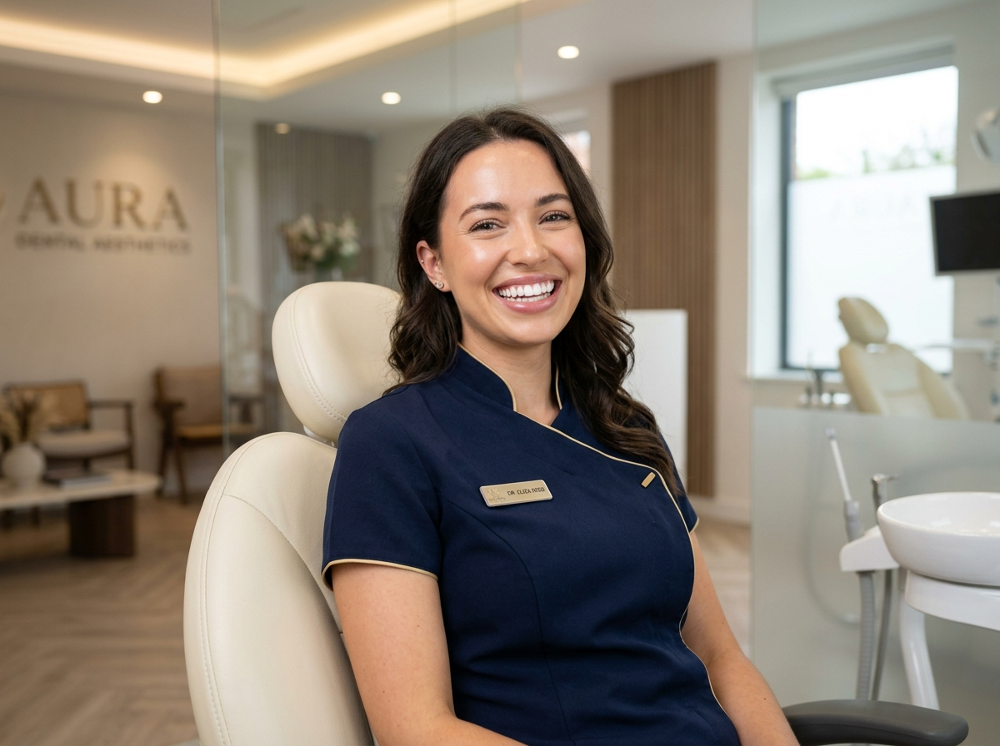
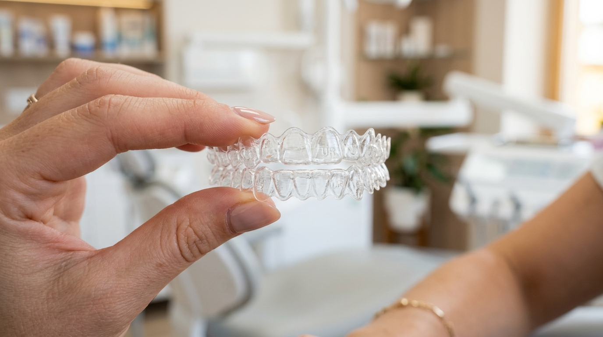
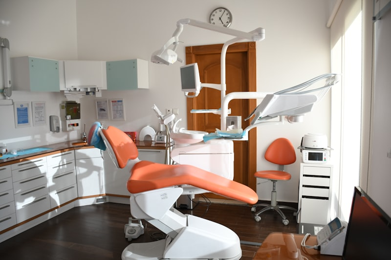
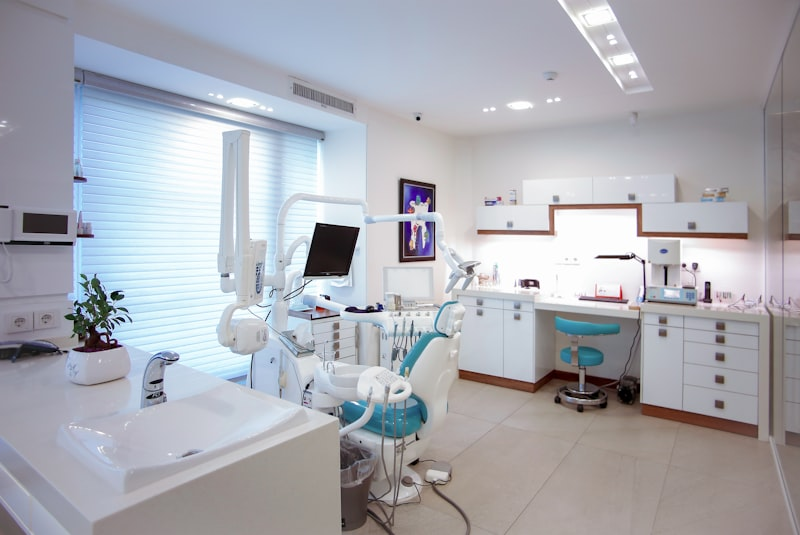
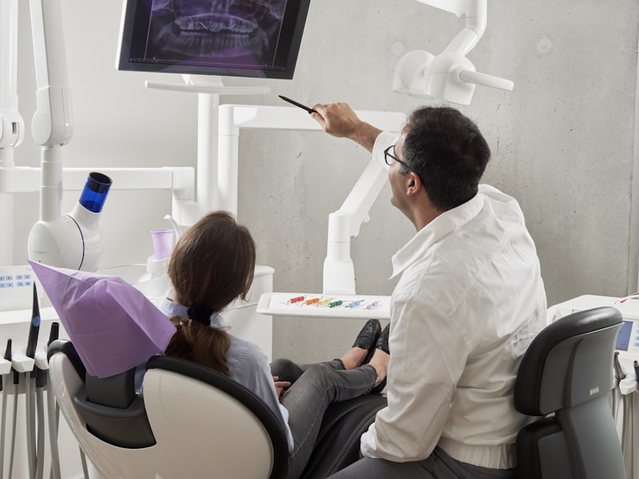
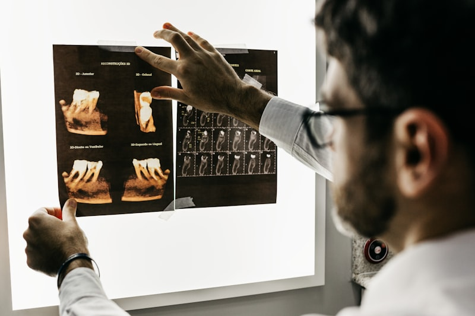
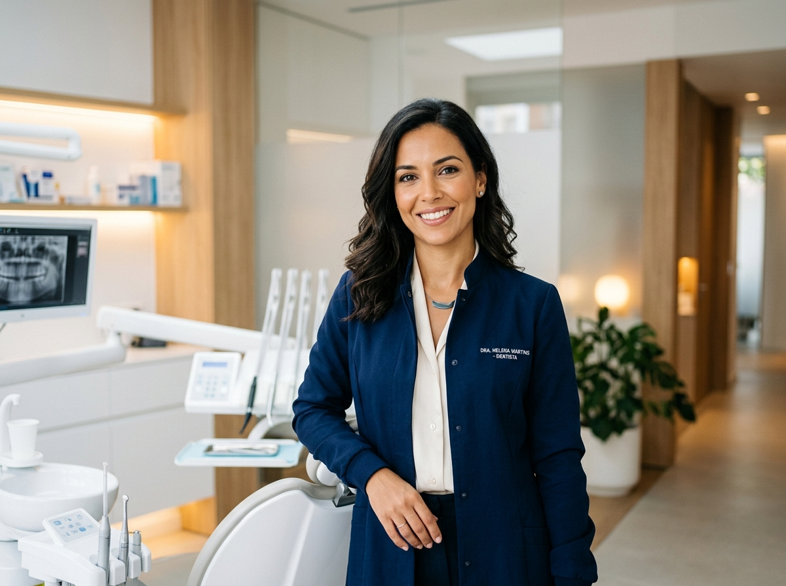

Alinhadores invisíveis, lentes de contato e implantes guiados por computador. Tecnologia de ponta e atendimento humanizado no coração dos Jardins.

Utilizamos os materiais mais nobres do mercado mundial aliados a softwares de simulação digital antes de iniciar qualquer procedimento.

Alinhe seus dentes com placas transparentes e confortáveis, removíveis para comer e higienizar sem fios metálicos.
Saber mais no WhatsApp
Lâminas ultrafinas de porcelana pura que corrigem formato, cor, espaçamento e pequenas imperfeições com acabamento hiper-realista.
Saber mais no WhatsApp
Cirurgia virtual 3D sem cortes extensos e sem pontos. Procedimento rápido, seguro e com pós-operatório infinitamente mais confortável.
Saber mais no WhatsAppEquilíbrio estético e funcional entre dentes, lábios e linhas da face através de preenchimentos sutis e toxina botulínica preventiva.
Saber mais no WhatsApp
Protocolos combinados que garantem dentes brancos e luminosos sem causar sensibilidade ou desgaste no esmalte dental.
Saber mais no WhatsApp
Restauração completa da função mastigatória, alívio de dores na ATM e devolução da beleza e estabilidade aos dentes.
Saber mais no WhatsAppEsqueça o medo de ir ao dentista. Aqui seu tratamento é calmo, pontual e 100% transparente.
Adeus às massinhas de moldagem desconfortáveis. Nosso scanner capta cada detalhe da sua boca em minutos com precisão milimétrica.
Anestesia computadorizada indolor e sedação consciente para que você realize seus tratamentos com total tranquilidade.
Respeitamos o seu tempo. Consultas com hora marcada e tempo dedicado exclusivamente a você, sem salas de espera lotadas.

Formada com honras e especialista em Ortodontia Estética e Reabilitação Oral, a Dra. Helena Martins acredita que cada sorriso é único e merece um planejamento personalizado.
Com mais de 12 anos de prática clínica e constante atualização em congressos internacionais, ela lidera a equipe da Odonto Prime com foco em ética, naturalidade e excelência técnica.
Nossa clínica está localizada em uma região nobre, de fácil acesso e com toda a infraestrutura necessária para seu conforto.